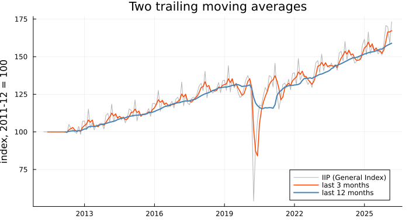
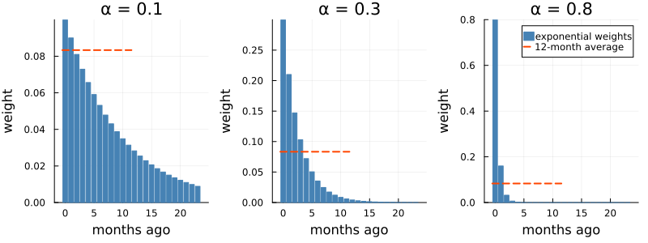
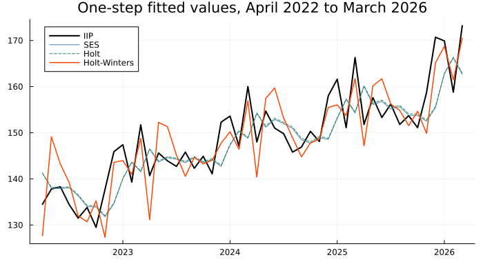
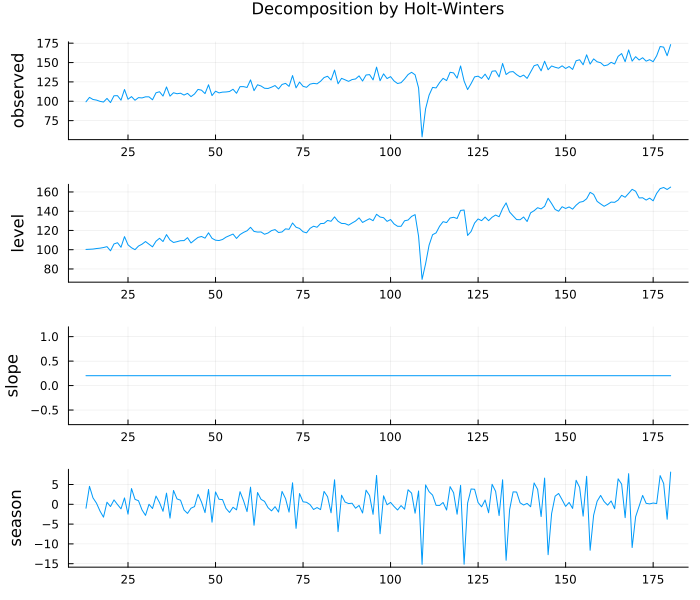
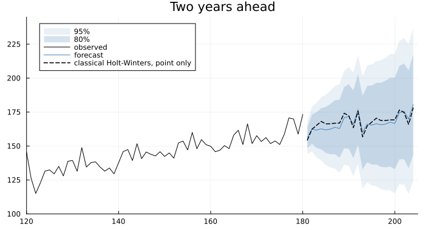
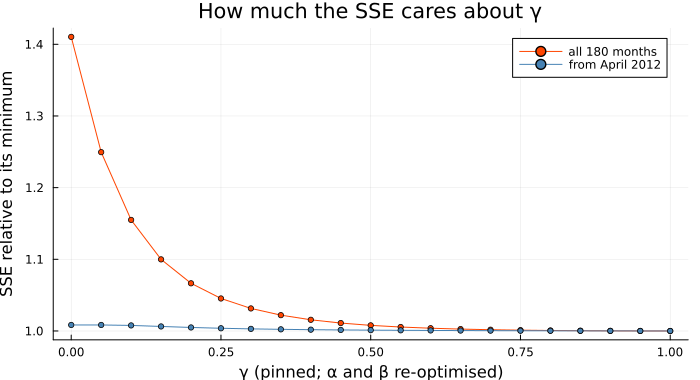
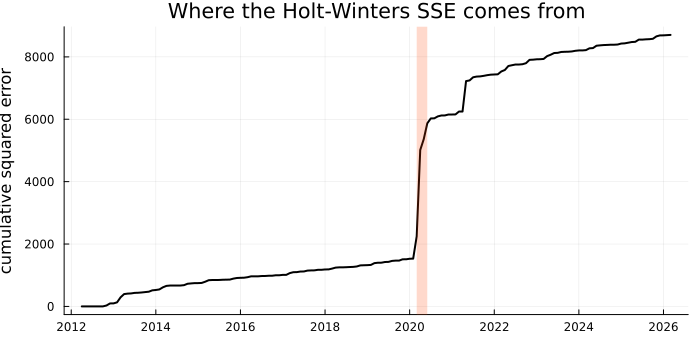

Weighting the Recent Past
India's Index of Industrial Production stood at 173.2 in March 2026. Somebody at a bank treasury desk, or at the Reserve Bank, wants a number for April before MoSPI publishes it. Chapter 20 fitted a seasonal ARIMA to exactly this series, and Chapter 22 turned such models into forecasts. But an ARIMA is a model of how the series is generated: every observation, April 2014 as much as February 2026, is evidence about the same fixed coefficients, and how much last month counts relative to five years ago is a by-product of those coefficients rather than something anyone chose.
Most people who forecast for a living have a simpler instinct, and it is not a naive one: recent data should count for more. Since 2014 the economy has been through demonetisation, the GST transition and a pandemic, and a forecaster who weighted all of it equally would be pretending otherwise. Part IV built models that remember. This Part builds models that forget — deliberately, at a rate the data is allowed to choose.
The obvious attempt: average the last few months
using TSAnalytics, Plots, Statistics, Dates
iip = dataset("iip_india") # MoSPI, monthly, April 2011 to March 2026
y, n = iip.value, length(iip.value)
tt = year.(iip.date) .+ (month.(iip.date) .- 1) ./ 12 # decimal years, for plotting
ma3 = convolution_filter(y, fill(1/3, 3); sides = 1) # trailing: only the past
ma12 = convolution_filter(y, fill(1/12, 12); sides = 1)
plot(tt, y; color = :gray, alpha = 0.6, label = "IIP (General Index)", legend = :bottomright,
ylabel = "index, 2011-12 = 100", size = (700, 380), title = "Two trailing moving averages")
plot!(tt, ma3; color = :orangered, lw = 1.5, label = "last 3 months")
plot!(tt, ma12; color = :steelblue, lw = 2, label = "last 12 months")
The tool is Chapter 4's, used the way a forecaster must use it: a trailing average, sides = 1, because next month's forecast can only be built from months that have already happened. The 3-month average is dragged around by every March spike. The 12-month average is smooth and sits below the series throughout the long climb from 2013 to 2019, and that lag is built in: an equal-weight average of the last twelve months is centred five and a half months in the past.
The trouble is the shape of the weights. A k-month average gives each of the last k observations the weight 1/k and everything older the weight zero — the month just outside the window counts for nothing, the month just inside it as much as last month. And k comes from nowhere. Score every window from 1 to 24 months on the same one-step forecasts (the forecast of y[t] is the average up to t-1):
rmse_k = [sqrt(mean((y[25:n] .- convolution_filter(y, fill(1/k, k); sides = 1)[24:n-1]) .^ 2)) for k in 1:24]
println("best window: k = ", argmin(rmse_k))
println("RMSE at k = 1, 2, 3, 6, 12, 24: ", round.(rmse_k[[1, 2, 3, 6, 12, 24]], digits = 2))best window: k = 2
RMSE at k = 1, 2, 3, 6, 12, 24: [9.53, 8.96, 9.17, 9.58, 9.54, 10.52]Two months wins, narrowly, and from three months to a year the curve is nearly flat and slightly jagged. No principle here would survive a different sample. What is wanted is a rule with one knob, whose weights fall away smoothly with age instead of dropping off a cliff.
The idea: weights that decay
Start from last month's forecast ŷ_t, see how wrong it was, and move the new forecast part of the way towards what actually happened:
\[\hat y_{t+1} = \hat y_t + \alpha\,(y_t - \hat y_t) = \alpha\, y_t + (1-\alpha)\,\hat y_t, \qquad 0 < \alpha \le 1 .\]
This is simple exponential smoothing, from the inventory-control work of Robert Brown and Charles Holt in the late 1950s. The first form says what it does — correct the forecast by a fraction α of its own error. The second says what it is. Substitute for ŷ_t, then for ŷ_{t-1}, and keep going:
\[\hat y_{t+1} = \alpha\, y_t + \alpha(1-\alpha)\, y_{t-1} + \alpha(1-\alpha)^2\, y_{t-2} + \cdots + (1-\alpha)^t\, \hat y_1 .\]
A weighted average of every past observation, with weights falling geometrically with age. They sum to 1 − (1−α)^t, which tends to one; the remainder (1−α)^t is the weight left on wherever the recursion started. No observation is ever dropped. Old ones simply fade.
panels = map((0.1, 0.3, 0.8)) do a
w = a .* (1 - a) .^ (0:23)
p = bar(0:23, w; color = :steelblue, linecolor = :steelblue, label = "exponential weights",
title = "α = $a", xlabel = "months ago", legend = a == 0.8 ? :topright : false)
plot!(p, [-0.5, 11.5], [1/12, 1/12]; color = :orangered, lw = 2, linestyle = :dash,
label = "12-month average")
end
plot(panels...; layout = (1, 3), size = (800, 300), ylabel = "weight",
bottom_margin = 5Plots.mm, left_margin = 3Plots.mm)
for a in (0.1, 0.3, 0.8) # the first 12 weights sum to 1 - (1-α)^12
println("α = ", a, ": half-life ", round(log(0.5) / log(1 - a), digits = 2),
" months; last 12 months together carry ", round(1 - (1 - a)^12, digits = 3))
endα = 0.1: half-life 6.58 months; last 12 months together carry 0.718
α = 0.3: half-life 1.94 months; last 12 months together carry 0.986
α = 0.8: half-life 0.43 months; last 12 months together carry 1.0This is the picture to keep. With α = 0.1 the weights decline slowly and the last twelve months carry only 0.718 of the total; more than a quarter of the forecast still comes from further back. With α = 0.3 the half-life is under two months. With α = 0.8 the forecast is four-fifths last month — nearly Chapter 22's naive forecast, which is the case α = 1. The dashed line is the 12-month average: flat, then nothing. Exponential smoothing replaces the window k with a rate α, and the cliff with a slope.
Readers of Chapter 19 have met this forecast before, under another name: the forecast function of an ARIMA(0,1,1) is exactly simple exponential smoothing, with α = 1 + θ. The two Parts are less separate than their titles — the difference is whether the weighting is the starting point or a consequence.
Making it work: level, then trend, then season
Simple exponential smoothing tracks one thing, a level. Holt's method adds a slope, smoothed with its own parameter β; Winters added a seasonal effect for each month, smoothed with γ. With m the period, the additive Holt-Winters recursions are
\[\begin{aligned} \ell_t &= \alpha\,(y_t - s_{t-m}) + (1-\alpha)(\ell_{t-1} + b_{t-1}) \\ b_t &= \beta\,(\ell_t - \ell_{t-1}) + (1-\beta)\, b_{t-1} \\ s_t &= \gamma\,(y_t - \ell_t) + (1-\gamma)\, s_{t-m} \\ \hat y_{t+h} &= \ell_t + h\, b_t + s_{t+h-m} \end{aligned}\]
and every line has the shape of the first one: a fraction of what the newest observation says, plus the rest of what was believed already. Drop the s terms for Holt's method; drop the b terms as well for simple smoothing. holt_winters fits all three, choosing whichever of α, β, γ are not supplied by minimising the sum of squared one-step errors.
println("first twelve observations: ", unique(y[1:12]))
ses = holt_winters(y)
holt = holt_winters(y; trend = :additive)
hw = holt_winters(y, 12; trend = :additive, seasonal = :additive)
for (name, m) in (("SES", ses), ("Holt", holt), ("Holt-Winters", hw))
println(rpad(name, 13), " α = ", rpad(round(m.alpha, digits = 4), 7),
" β = ", rpad(m.beta === nothing ? "-" : round(m.beta, digits = 4), 7),
" γ = ", rpad(m.gamma === nothing ? "-" : round(m.gamma, digits = 4), 7),
" SSE = ", round(m.sse, digits = 1))
endfirst twelve observations: [100.0]
SES α = 0.4807 β = - γ = - SSE = 12082.9
Holt α = 0.4712 β = 0.003 γ = - SSE = 12072.4
Holt-Winters α = 0.8529 β = 0.0 γ = 1.0 SSE = 8704.3Note the first line: every month from April 2011 to March 2012 is recorded as exactly 100.0, the base-year value, with none of the movement every later year shows. It will matter shortly.
The SSE falls at each step: 12082.9, 12072.4, 8704.3. Holt's slope adds almost nothing — β = 0.003 barely updates it, and the gain is under a tenth of one per cent. The seasonal term cuts the squared error by more than a quarter. Simple smoothing's α = 0.48 tells the same story from the other side: with no seasonal term, the only way to cope with a March spike is to chase it.
But a falling in-sample SSE is not, by itself, evidence that one model is better — Chapter 23 spent a chapter on why, and an extra parameter lowers the SSE whether or not it will help next year. So hold out the last two years and look forward, computing the forecast directly from the last line of the recursions:
function classical_forecast(m, h) # ŷ_{n+h} = ℓ_n + h b_n + s_{n+h-m}
b = m.trend_component === nothing ? 0.0 : m.trend_component[end]
s(k) = m.period === nothing ? 0.0 : m.seasonal_component[end - m.period + mod1(k, m.period)]
[m.level[end] + k * b + s(k) for k in 1:h]
end
train, test = y[1:n-24], y[n-23:n]
for (name, m) in (("SES", holt_winters(train)), ("Holt", holt_winters(train; trend = :additive)),
("Holt-Winters", holt_winters(train, 12; trend = :additive, seasonal = :additive)))
println(rpad(name, 15), "RMSE, last 24 months: ", round(rmse(test, classical_forecast(m, 24)), digits = 2))
end
println(rpad("seasonal naive", 15), "RMSE, last 24 months: ",
round(rmse(test, seasonal_naive(train, 24, 12).point), digits = 2))SES RMSE, last 24 months: 7.68
Holt RMSE, last 24 months: 7.51
Holt-Winters RMSE, last 24 months: 5.68
seasonal naive RMSE, last 24 months: 10.12Here the in-sample advantage does carry over — 5.68 against 7.68 for simple smoothing and 10.12 for repeating last year. It is one split, and Chapter 23's warning about one split applies in full; but it is at least not the SSE flattering a model that then forecasts worse.
aligned(m) = vcat(fill(NaN, n - length(m.fitted)), m.fitted) # fitted values start late
r4 = n-47:n
plot(tt[r4], y[r4]; color = :black, lw = 2, label = "IIP", size = (700, 380), legend = :topleft,
title = "One-step fitted values, April 2022 to March 2026")
plot!(tt[r4], aligned(ses)[r4]; color = :steelblue, label = "SES")
plot!(tt[r4], aligned(holt)[r4]; color = :seagreen, linestyle = :dash, label = "Holt")
plot!(tt[r4], aligned(hw)[r4]; color = :orangered, lw = 1.5, label = "Holt-Winters")
Simple smoothing and Holt's method are almost the same line, and both reach each March peak a month late: they see the spike only after it has happened, then carry part of it into April, where it does not belong. Holt-Winters rises in March because its seasonal state for March expects it. But look at April and May: Holt-Winters undershoots April in every one of these years, then overshoots May. The decomposition shows why.
s_at(yr, mo) = hw.seasonal_component[findfirst(==(Date(yr, mo, 1)), iip.date) - 12]
println("March seasonal state: 2013 ", round(s_at(2013, 3), digits = 2), ", 2019 ", round(s_at(2019, 3), digits = 2))
println("April seasonal state: 2019 ", round(s_at(2019, 4), digits = 2), ", 2020 ", round(s_at(2020, 4), digits = 2),
", 2025 ", round(s_at(2025, 4), digits = 2))March seasonal state: 2013 1.61, 2019 7.3
April seasonal state: 2019 -7.44, 2020 -15.17, 2025 -10.93plot(state_decomposition(hw); size = (700, 600))
state_decomposition pulls the three states apart, from April 2012, the first month after the year the initialisation consumed. The level is the running estimate of where the series would be with the seasonal effect removed. It is smoother than the data mainly because the season has been taken out, not because much smoothing is going on: with α = 0.85 each month's level is mostly that month's deseasonalised observation, so the April 2020 collapse arrives in it almost whole. The slope is a flat line, β = 0 made visible: set once at initialisation and never revised.
The season panel needs the most care. γ = 1 sounds like "replace the seasonal state entirely each year", but the update sets s_t to y_t − ℓ_t, after the level has already absorbed 85 per cent of the surprise; the seasonal moves only by what is left. So learning is slow even at the maximum: March's effect climbs from 1.61 in 2013 to 7.3 by 2019. Forgetting is just as slow. April 2020 drove April's seasonal state from -7.44 to -15.17, and in 2025 it is still -10.93. That is the April undershoot in the previous figure, and the May overshoot follows from it: April comes in above forecast, the level absorbs 85 per cent of the surprise, and May is forecast from a level set too high. A model built to forget is still remembering the lockdown five years on.
ets = fit_ets(y, 12; trend = :add, seasonal = :add)
fc = forecast(ets, 24)
println("classical point forecast, first 3 months: ", round.(classical_forecast(hw, 3), digits = 2))
println("fitted model, first 3 months: ", round.(fc.point[1:3], digits = 2))
println("standard error at h = 1, 12, 24: ", round.(fc.se[[1, 12, 24]], digits = 2))classical point forecast, first 3 months: [154.34, 162.34, 165.2]
fitted model, first 3 months: [156.15, 162.44, 161.7]
standard error at h = 1, 12, 24: [6.06, 20.34, 28.72]plot(fc; history = y, xlims = (120, 205), ylims = (100, 245), size = (700, 380),
title = "Two years ahead", legend = :topleft)
plot!(n+1:n+24, classical_forecast(hw, 24); color = :black, lw = 1.5, linestyle = :dash,
label = "classical Holt-Winters, point only")
Two forecasts, drawn differently on purpose. The dashed line is the classical fit projected forward — level, plus slope times horizon, plus that month's seasonal state — and it is a line and nothing more, which is all holt_winters offers. The fan comes from fit_ets — the same three equations refitted as a statistical model, which is Chapter 25's subject, borrowed here for one picture because without a model of the errors there is nothing to draw a band from. Its parameters were chosen differently, so its April forecast is 156.15 against the classical 154.34.
What the band does account for is the future: shocks still to arrive, accumulated through the recursions on the assumption that they resemble the in-sample errors. Its standard error grows from 6.06 at one month to 28.72 at two years — fast, because this fit puts nearly all its weight on the latest month, so every shock moves the level for good. What it does not account for is uncertainty about the parameters, which are treated as known; the choice of model, treated as settled; or another April 2020. The errors that set the width include April 2020, which widens the band somewhat, but a Gaussian band can only call a halving of the index in a month wildly improbable.
The complication: where α, β and γ come from
The parameters have to come from somewhere. Judgement is one source: someone who wanted to ignore the monthly noise might set α = 0.1 for simple smoothing, at an SSE of 15111.2 (first line below) against 12082.9 at the fitted 0.48. Minimising SSE is the other source, and the software's default. On this series it has two problems, and the second is the deeper one.
The first is the γ = 1, and it is a repair, not a fact about Indian industry. holt_winters, like R's HoltWinters, takes its starting seasonal states from a classical decomposition of the first two years — and the first of those years is the flat run of 100.0:
println("SES with α = 0.1 chosen by eye: SSE = ", round(holt_winters(y; alpha = 0.1).sse, digits = 1))
println("starting seasonal pattern, April 2011-March 2013: ",
round.(classical_decompose(y[1:24], 12).figure, digits = 2))
println("the same, April 2012-March 2014: ",
round.(classical_decompose(y[13:36], 12).figure, digits = 2))
hw_trim = holt_winters(y[13:end], 12; trend = :additive, seasonal = :additive)
println("refitted without the flat year: α = ", round(hw_trim.alpha, digits = 4), " β = ",
round(hw_trim.beta, digits = 4), " γ = ", round(hw_trim.gamma, digits = 4),
" SSE = ", round(hw_trim.sse, digits = 1))SES with α = 0.1 chosen by eye: SSE = 15111.2
starting seasonal pattern, April 2011-March 2013: [-1.07, 4.55, 1.62, 0.23, -1.73, -3.32, 0.4, 0.22, -0.09, -0.24, -0.3, -0.26]
the same, April 2012-March 2014: [-2.31, 0.85, -4.16, -1.13, -1.96, -0.92, 0.2, -5.38, 3.42, 3.43, -2.69, 10.65]
refitted without the flat year: α = 1.0 β = 0.0 γ = 0.0 SSE = 7212.3Read April to March. From the flat year, March starts at -0.26; a year later it is 10.65, which is what anyone who has looked at IIP would expect. A model that begins by believing March is an ordinary month can only correct itself by updating as fast as it is allowed, and γ = 1 is that. Drop the twelve flat months and γ goes to the other end of its range: zero, never update at all. To see how much the data actually cares, pin γ at each value in turn and let α and β re-optimise:
gs = 0.0:0.05:1.0
prof(yy) = [holt_winters(yy, 12; trend = :additive, seasonal = :additive, gamma = g).sse for g in gs]
p_full, p_trim = prof(y), prof(y[13:end])
plot(gs, p_full ./ minimum(p_full); marker = :circle, ms = 3, color = :orangered,
label = "all 180 months", xlabel = "γ (pinned; α and β re-optimised)",
ylabel = "SSE relative to its minimum", size = (700, 380), title = "How much the SSE cares about γ")
plot!(gs, p_trim ./ minimum(p_trim); marker = :circle, ms = 3, color = :steelblue, label = "from April 2012")
println("all 180 months: SSE at γ = 0 is ", round(p_full[1] / minimum(p_full), digits = 3), " × the minimum")
println("from April 2012: SSE at γ = 0 is ", round(p_trim[1] / minimum(p_trim), digits = 3), " × the minimum")
println("from April 2012: free fit SSE ", round(hw_trim.sse, digits = 1), ", γ pinned at 1: ", round(p_trim[end], digits = 1))all 180 months: SSE at γ = 0 is 1.41 × the minimum
from April 2012: SSE at γ = 0 is 1.008 × the minimum
from April 2012: free fit SSE 7212.3, γ pinned at 1: 7152.3With the flat year included the SSE cares a great deal — 1.41 times its minimum at γ = 0 — because a wrong starting pattern needs fast updating to be corrected. Without it the curve is almost level: the worst γ costs under one per cent. The data does not determine γ, not even well enough for the optimiser. The free fit stops at γ = 0 with SSE 7212.3, while pinning γ = 1 gives 7152.3, lower. R's HoltWinters stops at the same corner with the same SSE to four decimals. On a surface this flat, where an optimiser comes to rest is close to an accident.
plot(tt[13:end], cumsum(hw.resid .^ 2); color = :black, lw = 2, legend = false, size = (700, 340),
xticks = 2012:2:2026, ylabel = "cumulative squared error", title = "Where the Holt-Winters SSE comes from")
vspan!([tt[108], tt[111]]; color = :orangered, alpha = 0.2) # March to June 2020
A further reason for suspicion: across the shaded band, March to June 2020, the cumulative SSE jumps by about half its final total — four months out of a hundred and sixty-eight; the next step up, a year later, is May 2021 and the second wave. Least squares listens hardest to its largest errors, so the parameters that minimise this SSE are, to a degree nobody would choose, the ones that best handled a lockdown.
Three standard implementations of additive Holt-Winters, the full 180-month IIP series, defaults throughout — all three run, not recalled:
α | γ | April 2026 forecast | |
|---|---|---|---|
R stats::HoltWinters (R 4.6.0) | 0.8529 | 1.0000 | 154.34 |
Python statsmodels 0.14.1 ExponentialSmoothing | 0.9690 | 0.0000 | 156.04 |
R forecast::hw 9.0.2 | 0.9439 | 0.0001 | 155.86 |
This package's holt_winters reproduces the first row exactly, forecasts included. The seasonal parameter sits at opposite ends of its range, and none of the three is wrong. R's HoltWinters fixes its starting states from the first two years, as above, and must spend γ repairing them. statsmodels defaults to initialization_method="estimated", optimising the starting states jointly with the smoothing parameters, so it can begin with the right seasonal pattern and leave it alone. forecast::hw fits by maximum likelihood as an ETS(A,A,A), which also estimates the starting states, and reports γ in a different parameterisation — the manual gives the map. Even the statsmodels row depends on the version: 0.15.0 returns α = 1.0000 from the same call.
The second problem reaches beyond this series. Minimising a sum of squares yields point values for α, β and γ, and nothing else. There is no likelihood behind it, so there is no standard error — the flat profile had to be drawn by hand, and the trimmed fit reported γ = 0 with the same apparent confidence it would report anything. There is no AIC, so no principled way to ask whether Holt-Winters' extra parameter is worth what it costs over Holt's, when SSE always prefers the larger model. And there is no model of the errors, which is why the fan chart had to borrow one.
Where this leaves you
You can forecast by weighting the recent past: choose how fast to forget, or let the data choose, with a level, a slope and a seasonal pattern each revised by a fraction of every new error. You can read the states the method keeps, and you know why a trailing moving average was the right instinct with the wrong weights.
What you cannot do is say how sure you are: no standard errors for α, β and γ, no AIC to choose between Holt and Holt-Winters, no interval of your own. The three gaps have one cause — no probability model behind the recursions — and one remedy. Write the recursions as a model with an explicit error term, and a likelihood follows, and with it everything missing here. Do that systematically and there turn out to be thirty such models, of which this chapter's three are the simplest. That is Chapter 25.
See also
- Chapter 4 — moving averages and trailing filters
- Chapter 22 — benchmark forecasts, including the naive forecast that
α = 1reproduces - Chapter 23 — why a falling in-sample SSE is not evidence
- Chapter 25 — the ETS framework, with a likelihood
- Exponential Smoothing, ETS, Theta and TBATS — the manual chapter, including the classical-to-innovations parameter map
- API:
holt_winters,fit_ets,state_decomposition,forecast,convolution_filter,classical_decompose